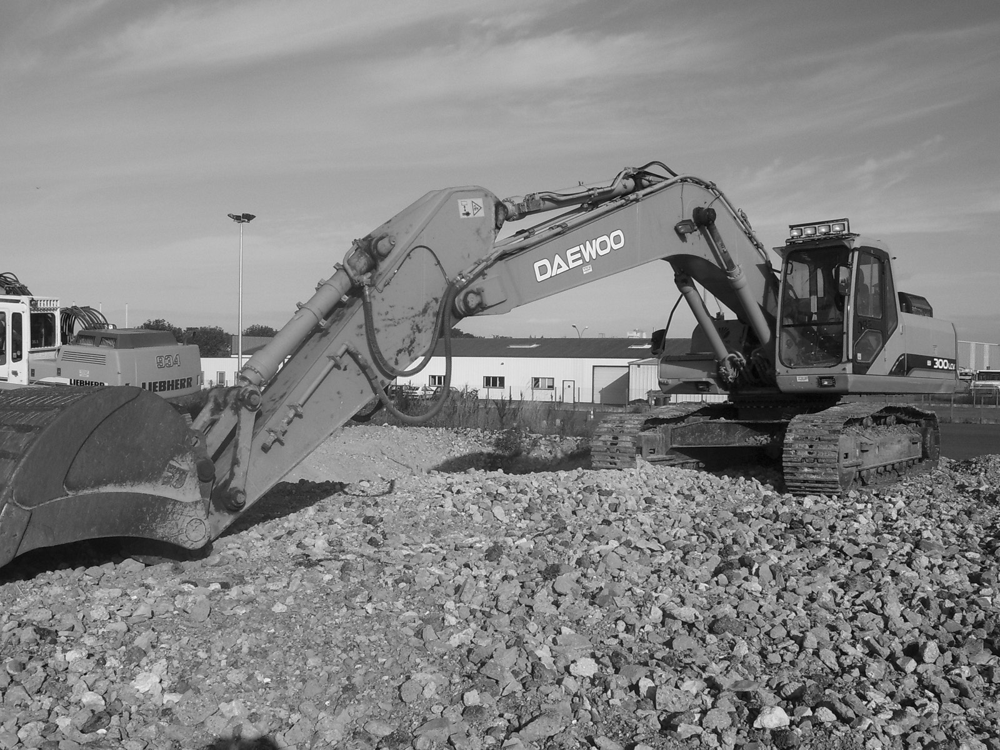
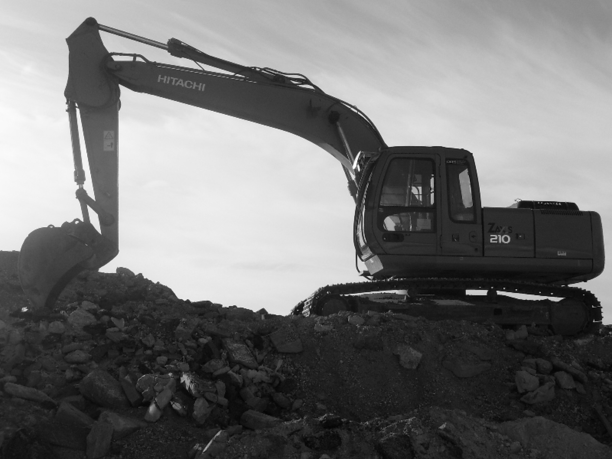
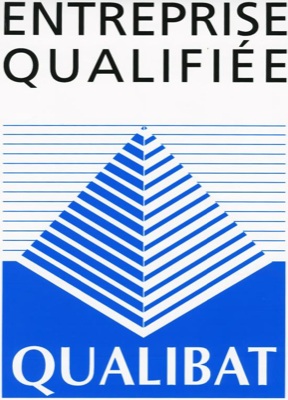
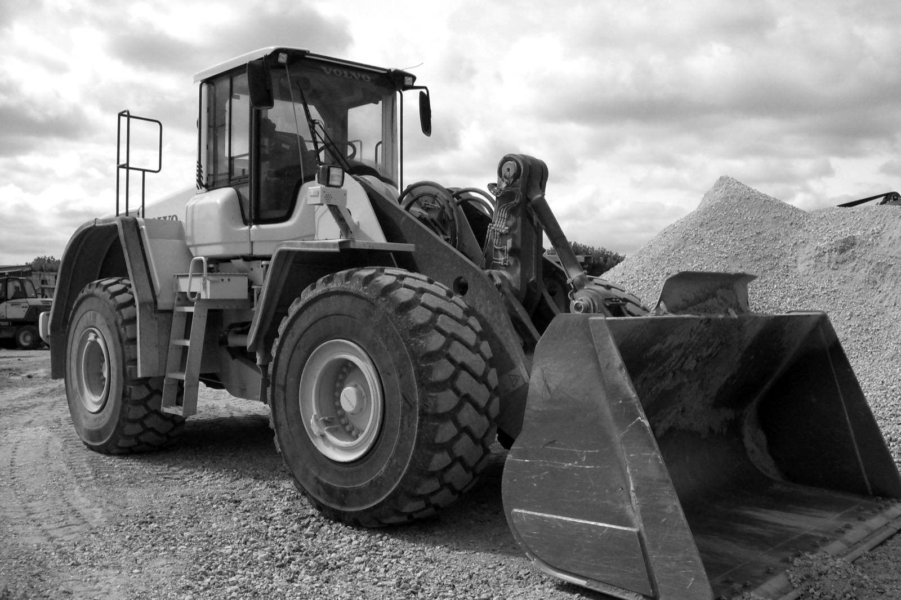
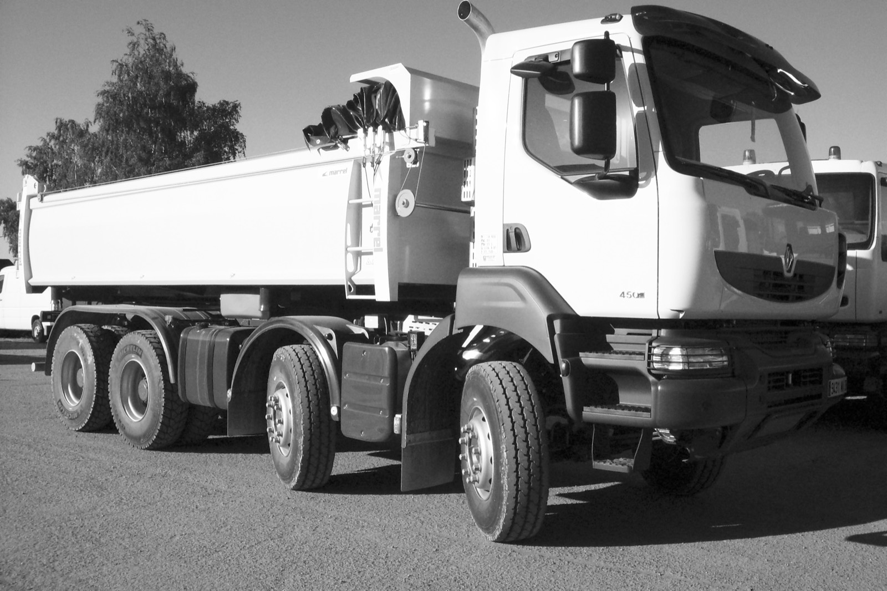
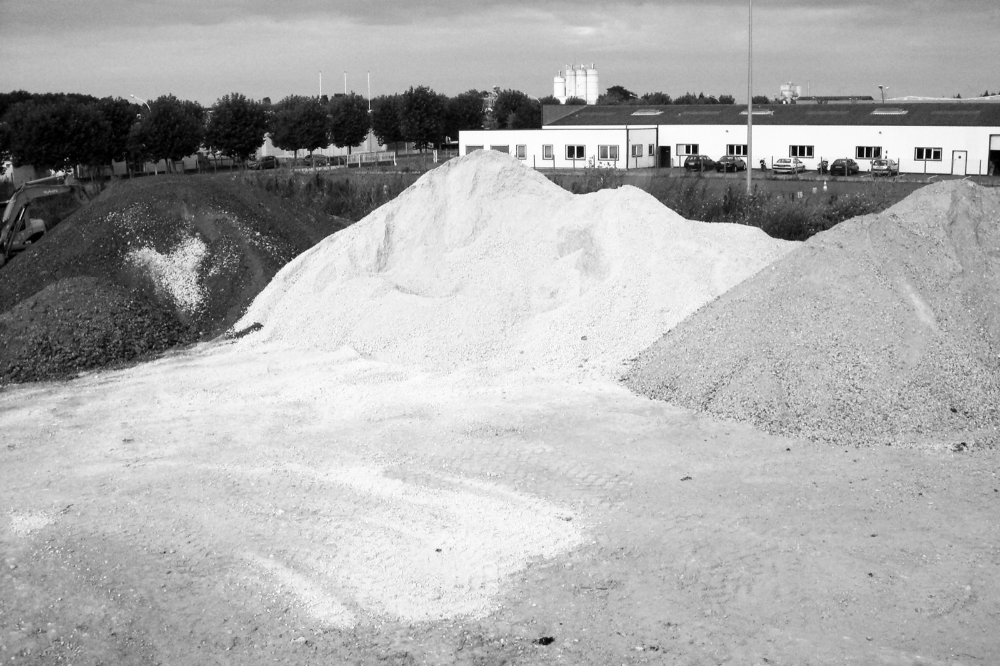

Particuliers · entreprises · collectivités
Terrassement
Fouilles en pleine masse, tranchées, plateformes, décapage et nivellement. Préparation de terrain pour maisons, bâtiments et voiries.
Chiffrer mon terrassement
Lucé · Chartres · Eure-et-Loir — depuis 2004
Location de matériel TP avec conducteur, concassage et vente de matériaux. Professionnels et particuliers.

Entreprise qualifiéeL’entreprise
Depuis notre dépôt de la zone industrielle de Lucé, nous intervenons chaque jour sur les chantiers de l’agglomération chartraine et de toute l’Eure-et-Loir : fouilles de maisons, plateformes, voiries, démolitions et évacuations.
Vous n’avez qu’un devis et qu’un numéro à appeler. Nos équipes coordonnent les engins et les rotations de camions pour que votre planning tienne.
Nos métiers

Particuliers · entreprises · collectivités
Fouilles en pleine masse, tranchées, plateformes, décapage et nivellement. Préparation de terrain pour maisons, bâtiments et voiries.
Chiffrer mon terrassement
À la journée · à la semaine · au chantier
Pelles, chargeuses et camions-bennes loués avec un conducteur expérimenté. Vous avez le matériel et la compétence, sans l’entretien ni l’assurance.
Réserver un engin
Livraison · enlèvement · rotations
Approvisionnement de vos chantiers et évacuation des déblais par nos camions-bennes, au rythme de vos engins.
Organiser un transportBâtiments · ouvrages
Démolition de bâtiments et d’ouvrages, tri des matériaux et évacuation des gravats vers les filières adaptées.
Chiffrer une démolitionSur site · sur plateforme
Les bétons et gravats de démolition deviennent des granulats réutilisables, pour moins de déchets et des matériaux moins chers.
Parler de mon projetEnlèvement à Lucé · livraison
Sables, granulats et matériaux recyclés pour remblais, fonds de forme, allées et plateformes.
Demander un prix
Concassage & matériaux
Nous recyclons les bétons et gravats de nos démolitions et vendons sables et granulats pour vos travaux. Chargement sur notre plateforme de Lucé ou livraison sur votre chantier par camion-benne.
Comment ça se passe
Par téléphone ou via le formulaire : nature des travaux, adresse, volumes, délais.
Visite sur place si nécessaire, puis devis détaillé : matériel, conducteurs, camions, matériaux.
Engins, camions et équipe réservés à vos dates, avec un seul contact pour le suivi.
Travaux, évacuation des déblais et remise en état. Le chantier est rendu propre.
Zone d’intervention
Recrutement
Nous recherchons régulièrement des conducteurs d’engins, des chauffeurs poids lourds et des mécaniciens. Envoyez-nous votre candidature, même spontanée.
Envoyer ma candidatureDevis gratuit